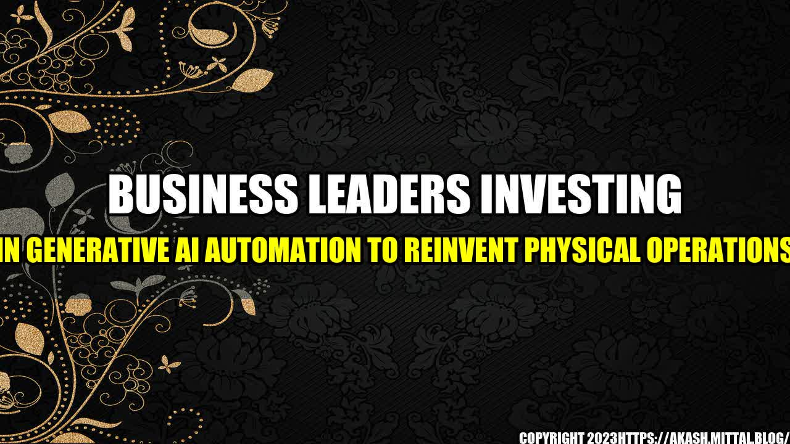

Business Leaders Investing in Generative AI Automation to Reinvent Physical Operations
The rapid advances in technology have brought about a new era of digital transformation in industries across the board. One of the most interesting and innovative technologies emerging during this digital renaissance is generative AI automation.
Generative AI is a form of artificial intelligence that produces original content that can be as complex as music, images, or even texts. It has the potential to revolutionize industries by automating routine tasks, generating new solutions and products, and improving overall efficiency.
Several business leaders have recognized the potential of generative AI and are investing in its development to revolutionize their physical operations. Let's take a look at a few examples of how AI automation is transforming the business world.
Tesla's GPT-3-Powered AI for Efficient Processes
Tesla has always been a company known for its innovation. Recently, the electric car company has been exploring the use of generative AI to improve its manufacturing processes. Tesla is now using GPT-3, OpenAI's language-based generative AI, to streamline various processes and automate the production chain.
The company is using AI-generated algorithms to find ways to cut down on waste, optimize supply chain processes, and reduce downtime. The use of generative AI has already started to show results for Tesla, and it is only a matter of time before it revolutionizes the way the company operates and manufactures cars.
Walmart's Robot Janitors Clean Up
Walmart is one of the largest retailers in the world, and it is always looking for ways to improve its in-store operations. In a bid to save costs and improve efficiency, Walmart has started investing in robot janitors to clean its stores.
The robots, equipped with generative AI, use machine learning to analyze the cleaning patterns of human janitors, ensuring that they clean efficiently and effectively. The robots have already proved to be highly efficient, improving Walmart's cleaning operations significantly and freeing up human workers to focus on more complex tasks.
Amazon's Warehouse Automation Goes a Step Further
Amazon has long been renowned for its vast warehouses and astonishing logistics operations. However, the e-commerce giant is now exploring the use of generative AI to automate even more tasks in its warehouses.
The use of AI automation in warehouses is nothing new. However, Amazon is taking it a step further by using generative AI to optimize the placement of products in its enormous warehouses. By analyzing data and optimizing layouts, Amazon can increase the efficiency of its warehouse operations, reducing the time it takes to pick, pack and ship orders.
Conclusion
- Generative AI automation is transforming industries by automating routine tasks, generating new solutions and products, and improving overall efficiency.
- Business leaders such as Tesla, Walmart, and Amazon are leading the way in investing in generative AI automation to revolutionize their physical operations.
- As generative AI continues to evolve, it has the potential to unlock a vast array of opportunities for businesses across multiple industries.
Curated by Team Akash.Mittal.Blog
Share on Twitter Share on LinkedIn